The priority of my desires
Sleep quite well last night. The snack bar closes very late, while the noise of guests coming for food could be heard even on 2 or 3 am.
It is really hard to do this business for such bars by the roadside.
When I woke up I felt my body is fully printed by the spring bed,
and some joints just felt being dislocated and relocated again.
I carried my towel and toothbrush to wash up. Above the washbasin in front of the shop,
there were three dragonfly-like and two moth-like insects floating on the water tank. I stared for three seconds.
And I decided to pretend not seeing these bathing insects, and still wash up using this water.
When in Rome, do as Romans do. If I don’t adapt myself to it, how to live in Kazakhstan from now on?
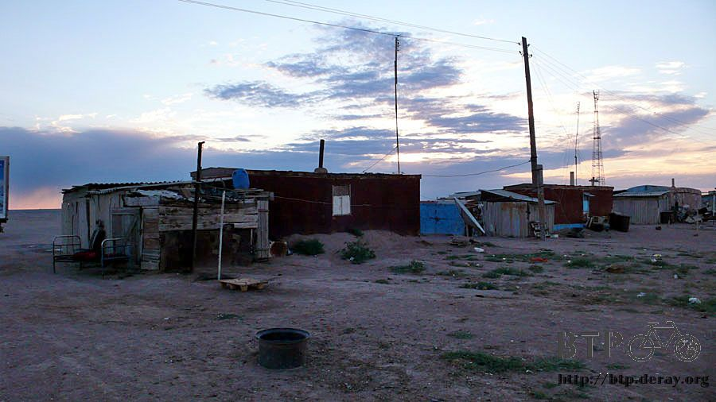
The water in the bottle I prepared to drink today came from that the snack bar boiled for making tea.
Actually the un-boiled water here maybe basically not for drinking,
but people don’t care and just drink it since the source of water is very few here.
Drinking boiled water makes me feeling safer. However the taste is really strange.
It’s a kind of sticky feel, and it seems you are drinking the water in the aquarium.
In order to cover up this strange taste, I added a couple of spoon of brown sugar into the bottle. It may drink better.
Six thirty in the morning, the sun just rose on the hill.
Catch the time and start the trip in the cool morning, before it is getting hot.
Yesterday I inquired and found out that the ninety kilometers I planned to cover today is again full of up hills and down hills,
which is a highly manpower-consuming terrain.

Yesterday I bought two boxes of juice. Less than half box was left and I stored it in the refrigerator of the snack bar.
It was frozen when I take it out this morning.
Without finding a suitable place on the packs, I take the juice on the hand, and have to wait until it is melted.
The breakfast today is one hotdog, some pieces of cookie, plus the almost empty juice.
The food in the bag is running out, so it is time to prepare for complement.

Although I connected back to the main road from the small route,
the road condition is not so good as the one lead to Kyrgyzstan that I went wrong earlier.
But it is much better than those bad roads like hit by the meteor rain.
This is the road distance sign of Kazakhstan. It is a strut-shape angular design and has two numbers on it.
Drivers will see different numbers from different sides.
There is still more than two thousand kilometers to ride on this road. I’m just wondering where the end is of this road.
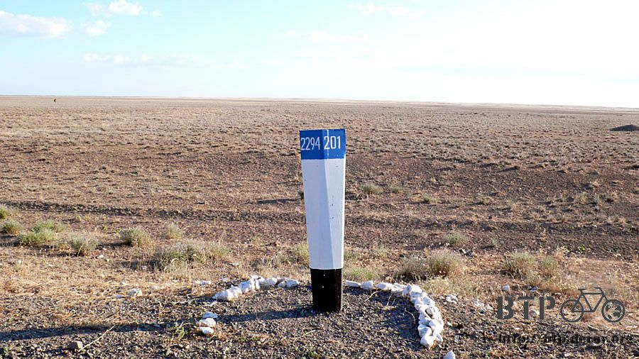
The scenery here is always the same in the whole morning.
It’s a single road with the pasture of yellow short grass on left and right. Except the moorland that you don’t see its boundary, there is…
Nothing at all!
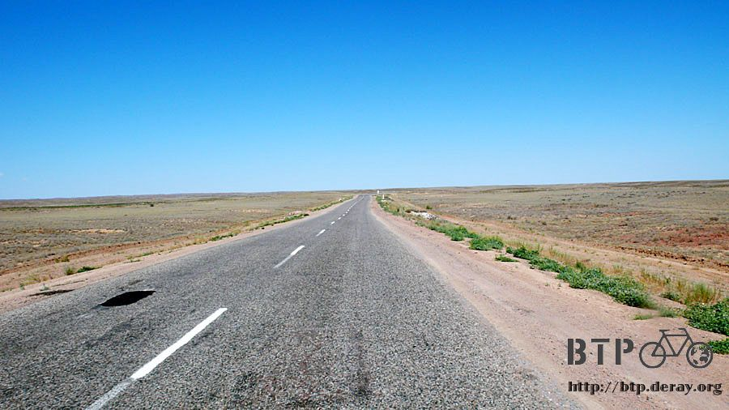
If you think the road you are riding is no big deal, fine,
this complex sign clearly describe that the next 50 kilometers is good for me to suffer.
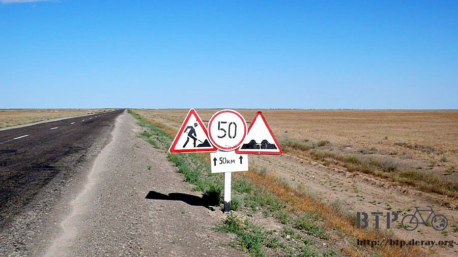
Cars passed by occasionally. The traffic is quite low,
and it makes me hard to believe that this is a main road connecting two big cities.
The more I stay in Kazakhstan, the less I understand this country.
The kinds of the dead animal bodies changed. Lots of snakes were flattened!
There are big one s and small ones, and besides this, I also see live scorpions and ultra big lizards crossing the road.
It looks the pasture here is quite not safe. If there is any other solution,
I will avoid camping in the outdoor wild area to prevent from any strange thing coming to sleep with me in the night.
The sign on the road is simple. My next destination, Astana, is now within one thousand kilometers,
and is estimated to be arrived by the first decade of July.
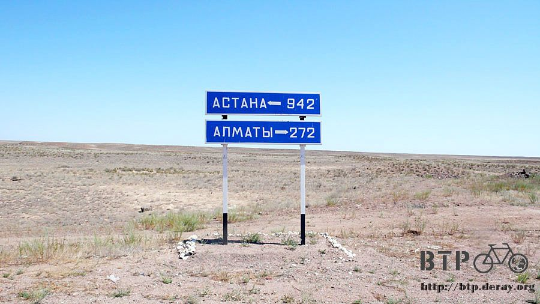
On the road there are some signs indicating the rivers, and even the bridges have been constructed formally.
However, there is not even one drop of water at all under the bridge, except sand and pasture.
The scenery around nearby is either the desert being under afforestation, or is the pasture becoming a desert.
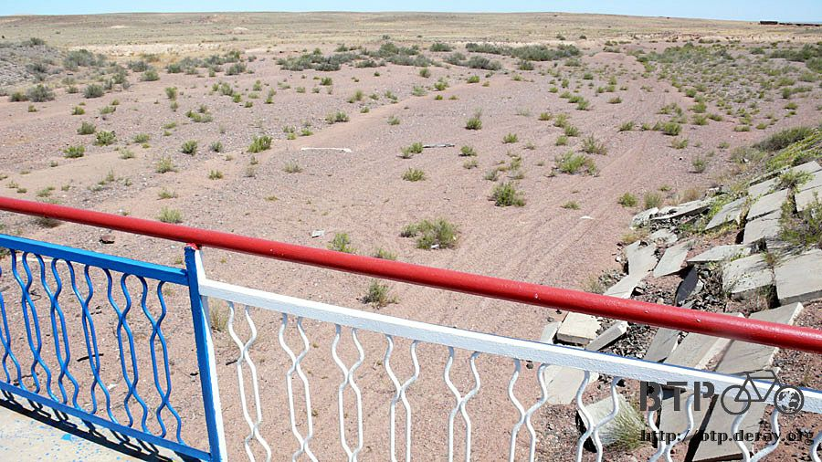
Started from the small shop I stopped last night, I’ve covered ninety-five kilometers without any human being.
As time goes by, the sun is rising higher, while the temperature made me wet again by sweat.
When thirsty, I could do nothing but drink the sweet boiled water smell and taste strange.
Feeling really dry and thirsty under the big sun, I will drink even if there is only aquarium water available.

Human made building finally appeared again in the noon.
A shabby gas station with a grocery ceased operation. Luckily a restaurant is still open.

I bought one liter of soda water first. During today’s trip I’ve been imaging the feeling of drinking cold drinks later.
And this thought almost drove me crazy! When the “dream” comes true, I felt nothing but great!

Dido was a poor fellow. Now I also put down the bags when I take rest at noon,
and I changed to comfortable slippers and put off the long pants as well, to take a really easy noontime rest.

For the lunch I still waived hands and fingers to the restaurant staff to prepare mine.
It’s a little bit bothering this way. They have to guess what I try to order,
and may worry about whether the meal they send is delicious to me or not.
But, no matter what the meal they provided, it is delicious because I was starving.
The lunch was ample. The red colored soup is just like the sour soup in the dinner last night in the small shop,
in which there is a lot of vegetable slices, potato and stewed lamb.
I got spaghettis with large pieces of meat, dry and hard bread, plus icy coke.
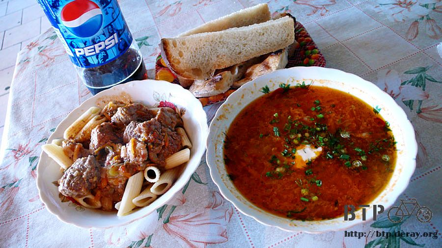
I still felt not full yet after consuming all the food. I saw that the fried fish the quests on the next table ordered looks not bad,
so I also order one. Its very delicious to add onion cut into pieces and spread some pepper on it.

Such an ample lunch charges six hundred bucks only. Although it is located in a remote place,
this restaurant is a good shop without exaggerating the price.
Any one, if any, who is full of time and come to Kazakhstan,
is suggested to come over here for the lunch with good taste and good price~
While the big sun was on the top of the sky, I had my lunch and took a short snap under the eaves of the restaurant.
There is a spring bed here like the one I slept last night, and thus I took a sufficient rest here.
It was still early, and I didn’t mean to stay overnight here. Just took a bit longer rest.
I was ready to start at 4:00 pm, and would ride to next stop in which I had no idea if it would be more comfortable than this place.
Before I left, I asked for some water from the proprietress with my already-empty bottle,
and was informed by her that there would be hotels for the night if I keep covering another seventy kilometers.
Actually I had not been that mind if there is any hotel available or not.
Considering the current situation, the top one in my priority list was the grocery since it provides food and drink.
The second priority is the restaurant that some more tasteful hot meal is available.
Hotel is the third one, in which I could take a comfortable bath, laundering, and an ultra long sleep.
Even if I delayed my starting until 4:00 in the afternoon, the sun still showed its passion.
The truck drivers’ dressing is quite cool. Basically naked on the upper body, and some of them are even stripped to be only one pants left.
And they just get off the car with the pants only, walking around no matter when refueling or shopping. Very interesting picture.
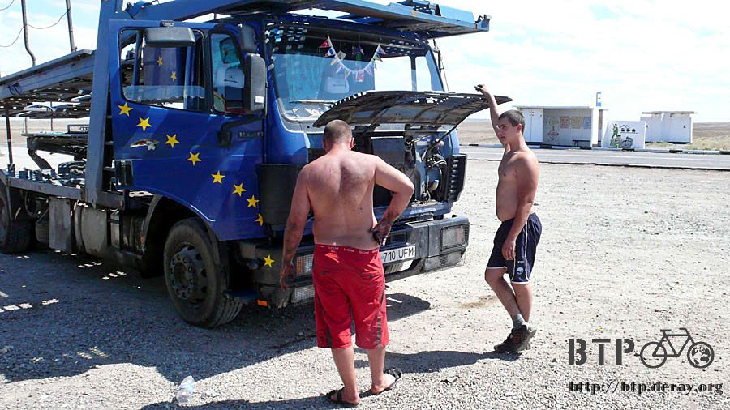
It has been headwind since I left the restaurant. The up hills and down hills were like in the morning,
while the scenery has no big change as well, but it just felt much more tiring.
I went on riding for four hours and didn’t stop until I felt a bit hungry.
The tiring riding deserves some more altitude, doesn’t it?
No, I lost some. Under the infestation by the headwind, even riding on the down hills felt same as on the up hills.
It just felt riding in the glue, with the pain of sticky and no progress.
Leaning the Dido on the rock, I took a short rest.
There is no any tree here and the ground is smooth, and I had no other choice to put the bike on.
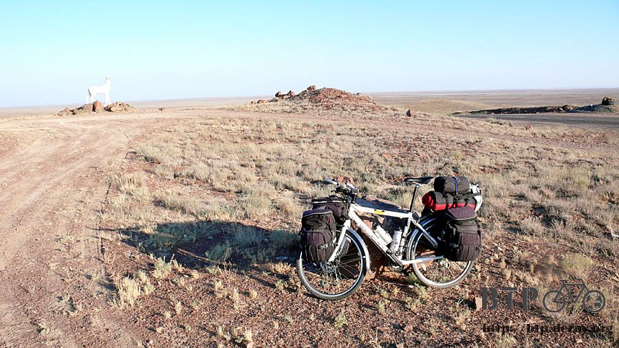
And I walked back to the top of the hill which I just climbed and had a bird view…
It’s totally super desolate! Is it necessarily too expansive?

The sunset came at around 9:00 pm.
The horses put out to pasture walked across the road rolling up misty dust. It is like in the dream.
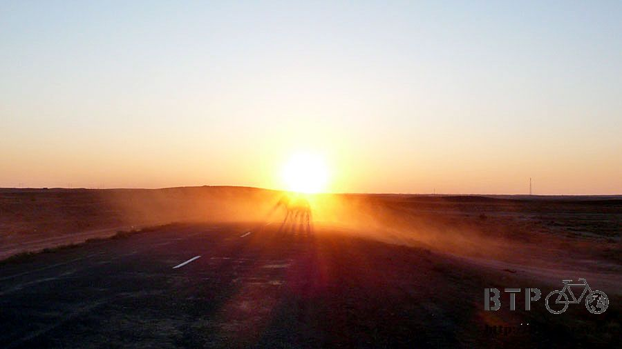
In the quiet withered pasture around, countless locusts appeared on every side after the sun set.
The locusts are very big and roaming about everywhere silently.
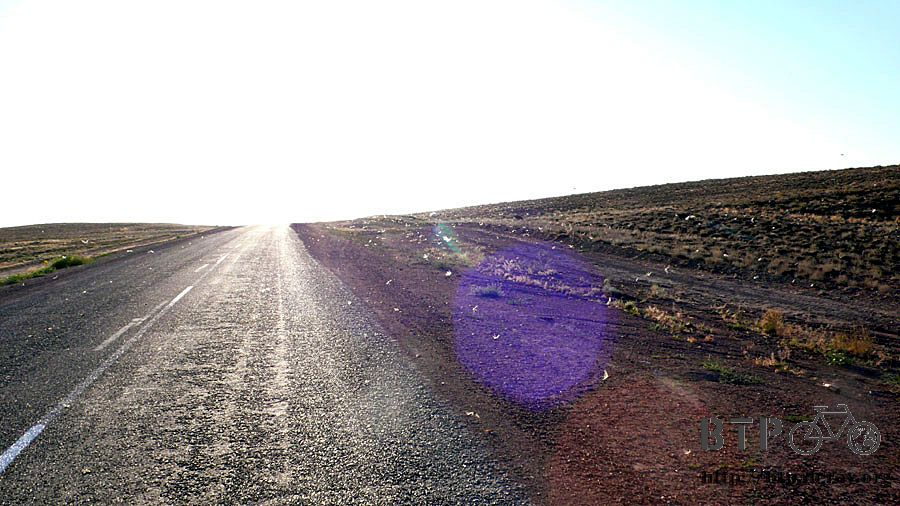
The big lake I noticed on the map finally showed off.
From now on I would ride all the way to the central big cities along the lakeside.
I expected the beautiful lake view.

Finally, before the sun hide behind the horizon,
I arrived the small town with hotels that the restaurant proprietress mentioned.
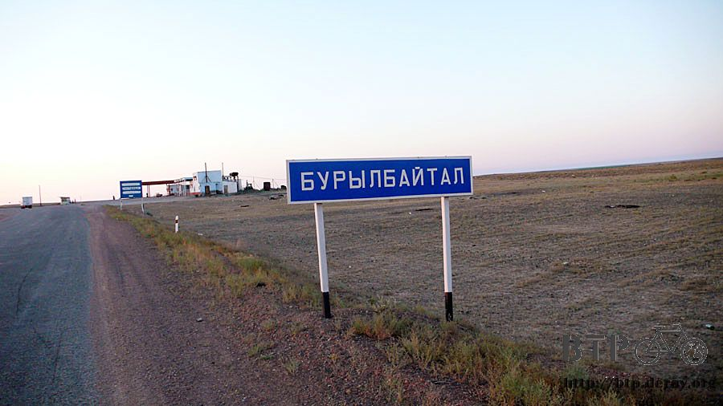
Instead of a gas station, the first building I met here is rarely a restaurant with a long train cabin,
meantime running the hotel business.
I ran to there and asked about the price of staying overnight, and planned to stay here if it is not too expensive.
I showed my memo pad to the staff to write the price on it, while they wrote down an Arabic number of one thousand.
This is very very cheap. Incredibly it take only 1,000 for an overnight stay.
It took even 2,500 bucks per night when I was in the suburban Almaty, where a one-hour short stay charged 700!
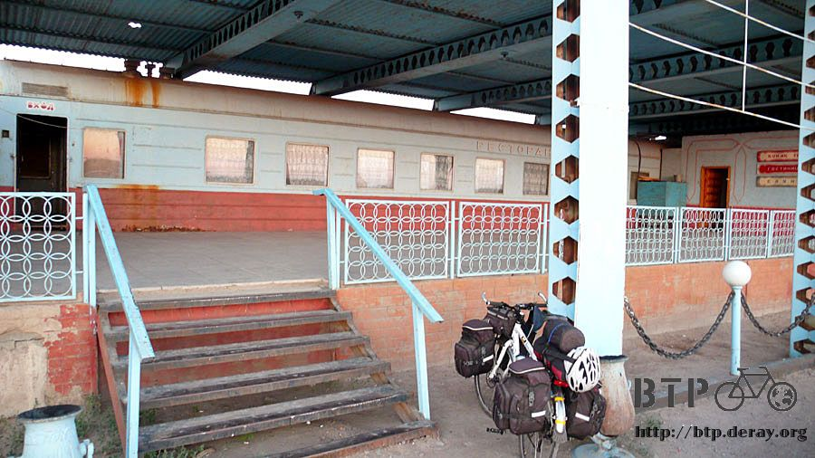
I confirmed it being the price for a whole night, and then moved Dido and my luggage into the room very happily.
There is a comfortable bed and a cool electric fan.

The staff showed me the hotel environment.
Since there is no shower facility in the room, I made a gesture of a bathing and asked if I can take a shower here.
He led me to a big bathroom. Maybe it is near the lake area, the water supply is unlimited,
and the hot water came in an endless flow when I turned on the handle.
Finally I found a solution for my dirty clothing. I just left a clean pants for myself,
and put all other clothes, no matter those for sleeping or for riding, into the hot water with washing powder.
Making the clothing wholly clean. Meanwhile, I took a very comfortable bath,
and feeling totally refreshed when the towel washed away all the dust cumulated on my skin for a few days.

I went to the train cabin restaurant for the dinner. Most people here have their dinner after 10:00 pm.
It was crowded in it and the business was prosperous. There must be some reason for it attracting customers.

I really hope that my Kazakhstan language could improve faster.
Still unable to read the menu, however I recorded the comparative name of the food I ordered every time after the meal.
Then I could order that food next time when I would like to eat.
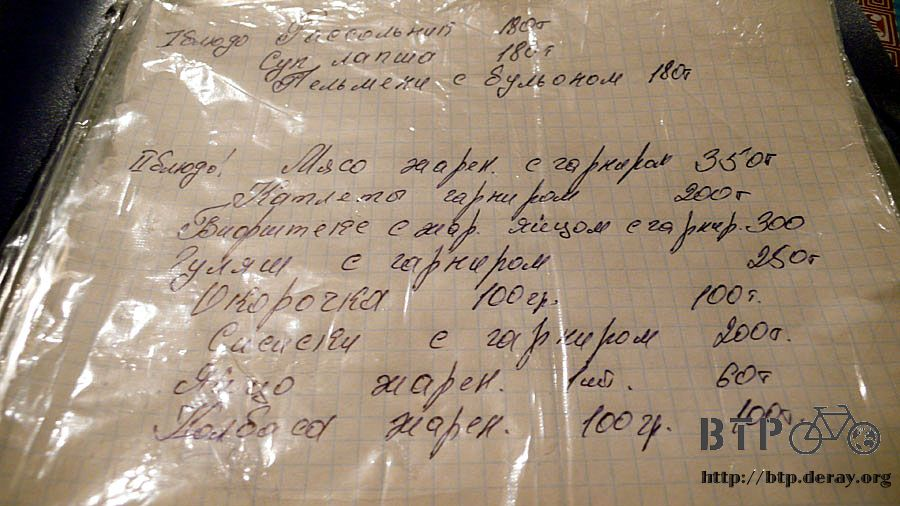
I told the grandma to send me some delicious meals.
I really admire when I saw other guests ordering meals fluently.
The only one thing I could order by myself is the milk tea.
Kazakhstan people actually look like European plus Russian. Asian faces are seldom seen. Here.

Forgetting to make the gesture, the milk tea that I ordered one bottle every time came only one cup this time.
The delicious bread is all you can eat, and the milk tea is all you can drink.
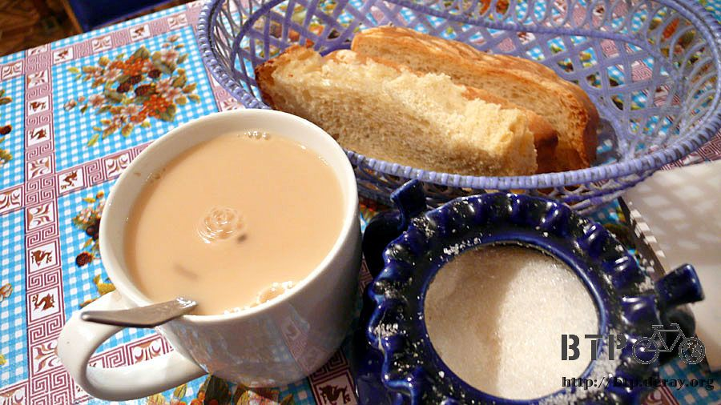
The main dish was the stewed lamb with spaghettis. The lamb meal here was treated very well.
No offensive smell, and the quality quite good. Fresh and juicy. I could eat to the full with the lamb with spaghetti.
I always take onion chips when I eat meat. Even though not for preventing the decayed teeth,
remember to make tooth brushed after the meal for a good mouth smell.
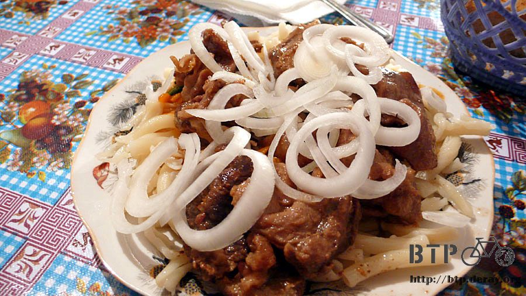
Finishing this meal fully. The whole body was clean to spread good smell,
feeling luckily with a round tripe and with the clothing under drying.
Today I covered two day’s distance at a time. Kazakhstan is just like China that it is not windy in the morning,
and begins wind blowing after the noontime. Taking a good rest tonight, and tomorrow I will have the lake tour.